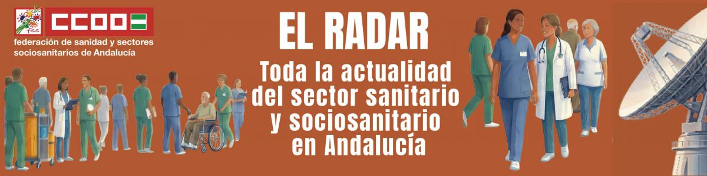
El Gobierno andaluz agranda las diferencias con el resto de comunidades
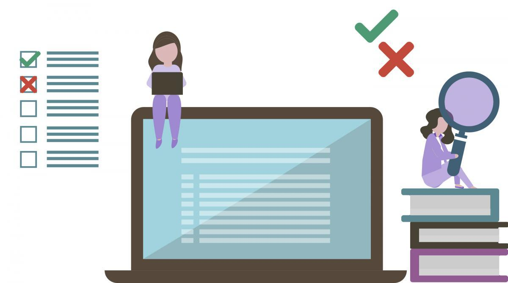
La Junta aumenta el presupuesto sanitario, pero las cuentas siguen sin cuadrar para la sanidad pública. Andalucía destinará en 2027 1.925 euros por habitante, por debajo incluso de los 2.014 euros de media estatal de 2026. Mientras tanto, las listas de espera, las demoras en Atención Primaria y la falta de profesionales siguen lastrando la atención.
FSS-CCOO Andalucía alerta de que el presupuesto desperdicia una nueva oportunidad para afrontar estos problemas. El aumento previsto de 2.500 profesionales se queda corto frente a los más de 16.600 que, según calcula CCOO, faltan para igualar la media estatal. La federación advierte de que unas cuentas insuficientes pueden agrandar las diferencias con el resto de comunidades.
Reclamamos soluciones para garantizar la cobertura de las necesidades asistenciales
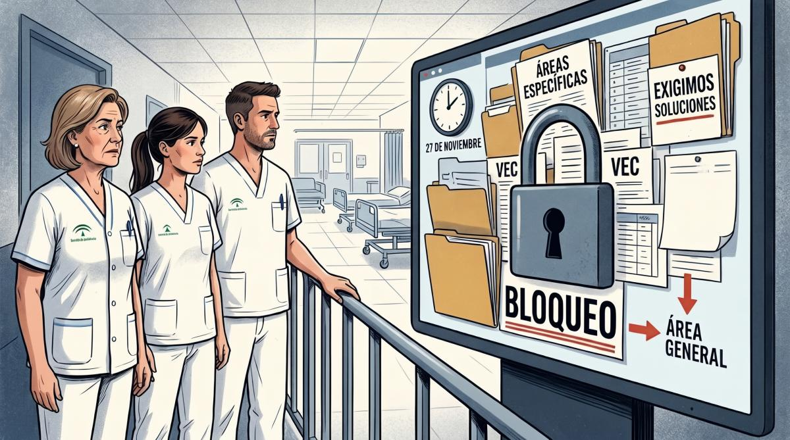
Si trabajas en Enfermería y solo tienes activada la disponibilidad en el Área Específica, ahora mismo no figuras como disponible porque esas áreas siguen sin publicarse. Este bloqueo dificulta directamente tu contratación, un problema real que la FSS-CCOO Andalucía trasladó en la reunión de la Comisión Central de Bolsa celebrada el 18 de noviembre.
Desde el sindicato exigimos una solución que evite perjuicios a la plantilla y garantice la cobertura de las necesidades asistenciales. Ante esto, la Administración indica presentar una nueva solicitud de disponibilidad en el Área General para estar disponible en unos 15 días, y quienes figuren excluidos en los listados definitivos con el código E55 deben hacer una nueva inscripción en áreas específicas por la VEC antes del 27 de noviembre.
Contra el negacionismo. Por la vida de las mujeres
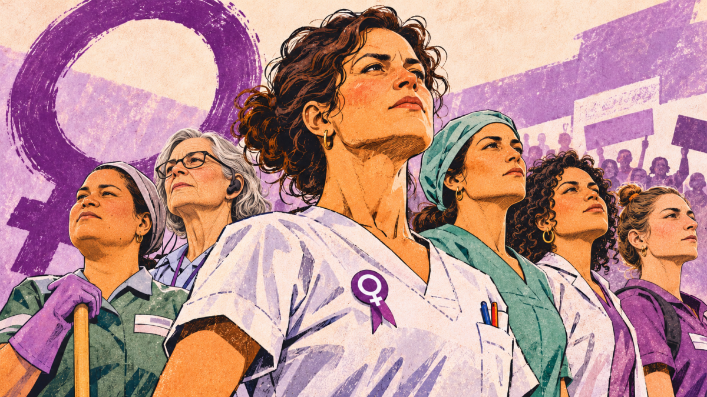
La violencia machista trasciende el ámbito privado para consolidarse como una estructura de desigualdad que opera con especial crudeza en el mercado laboral a través de la brecha salarial, la precariedad, el acoso y la sistemática infravaloración de los empleos feminizados. La desvalorización económica y social del trabajo de cuidados no es un fenómeno neutro, sino el reflejo directo de un sistema que normaliza la desigualdad de género en los espacios profesionales.
En sectores esenciales pero históricamente precarizados como la sanidad y el ámbito sociosanitario donde la fuerza de trabajo es mayoritariamente femenina, esta desigualdad estructural expone a las trabajadoras a una doble vulnerabilidad: sostienen los cuidados de la sociedad bajo condiciones laborales adversas mientras se enfrentan a un entorno donde el 28,4% de las mujeres en España (más de 4,4 millones de trabajadoras) ha sufrido acoso sexual en su centro de trabajo o con ocasión del mismo.
Por otro lado, no podemos olvidar que nos enfrentamos a una ofensiva reaccionaria que amenaza con desmantelar los mecanismos de protección conquistados mediante un negacionismo institucional que recorta recursos. Frente al desmantelamiento de los servicios públicos de atención y el aumento de la violencia extrema, que ya suma 44 mujeres y tres menores asesinados en lo que va de año, la defensa de entornos laborales seguros exige blindar la negociación colectiva, aplicar con rigor los protocolos contra el acoso y reivindicar un feminismo sindical de clase y antirracista que proteja tanto los derechos laborales como la integridad y la vida de todas las mujeres.
Exigimos que se publiquen ya los listados pendientes
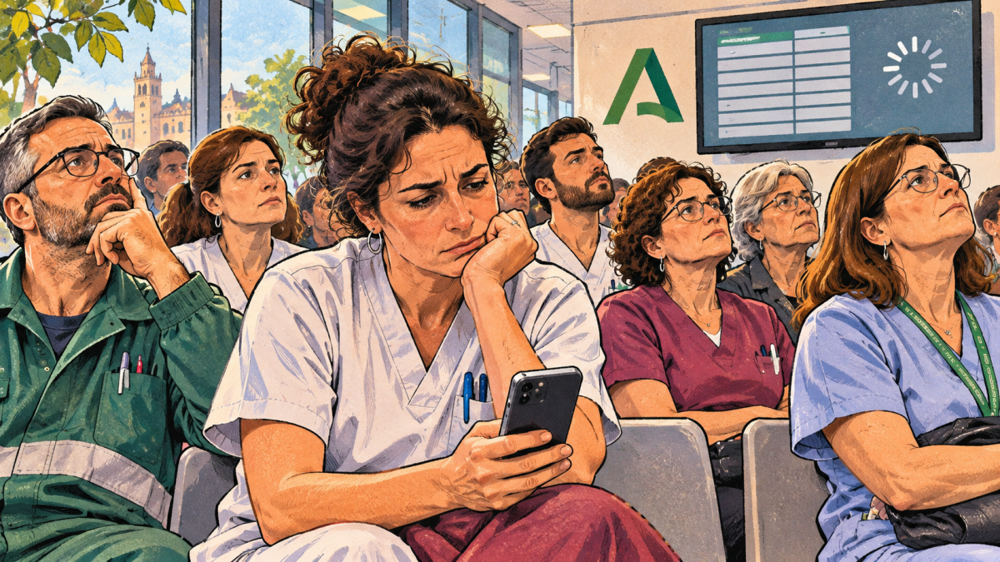
La Bolsa del SAS sigue dejando a miles de personas esperando una oportunidad. La FSS-CCOO Andalucía ha exigido en la Comisión Central de Bolsa Única la publicación de los listados pendientes de C1 y C2 sanitarios y personal de gestión y servicios. El sindicato denuncia que el SAS recurre a listados adicionales para evitar la baremación.
CCOO se ha posicionado en contra de que estos listados se utilicen para nombramientos de duración superior a la establecida en el Pacto. La federación advierte de que esta práctica deja fuera a miles de candidatas y candidatos, y cuestiona los principios de igualdad, mérito, capacidad y publicidad que deben garantizarse en la selección.
CCOO logra un incremento retributivo del 4,5% a las empleadas y empleados públicos para 2027
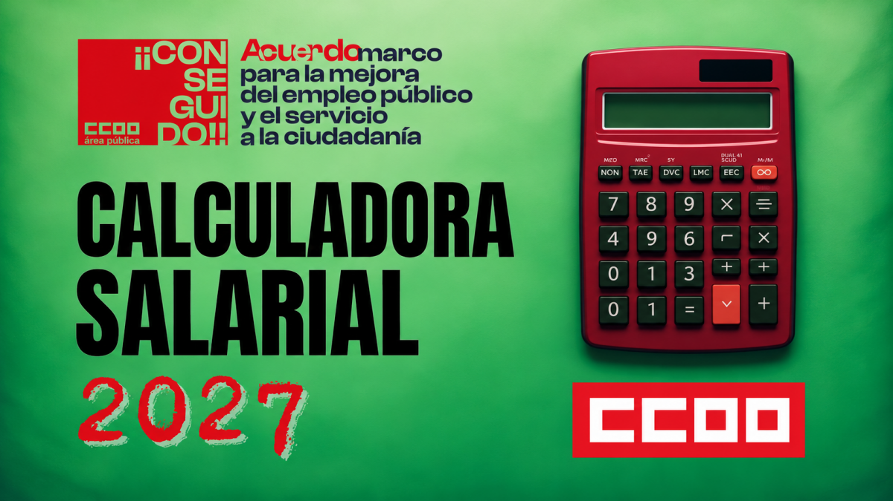
El Acuerdo Marco para la mejora del empleo público y el servicio a la ciudadanía, firmado por CCOO, recoge una subida salarial del 4,5 % para 2027. Con la nueva calculadora puedes consultar cómo se traducirá ese incremento en tu nómina.
Accede a la calculadora salarial y comprueba tu subida. Ten en cuenta que al resultado de la calculadora hay que añadir el 0,5 % adicional correspondiente a 2026.
La selección de la semana: Years and Years
Es una miniserie británica de drama distópico que sigue a una familia de Manchester a lo largo de 15 años a través de profundos cambios políticos, económicos y tecnológicos.
¿Sabes cuál es el órgano de representación legal del personal residente en Andalucía que se encuentra inoperante por la desidia del Sindicato Médico que ostenta su presidencia?
RESALTA EL CUADRO PARA VER LA RESPUESTA
(Pasa el dedo o el ratón por encima)
Pero además de estas noticias regionales, CCOO también desarrolla una gran actividad en los diferentes centros de trabajo y provincias. Te mostramos qué se cuece por ahí.
Denunciamos una nueva agresión a una médica de familia del Distrito Sanitario Granada Nordeste.
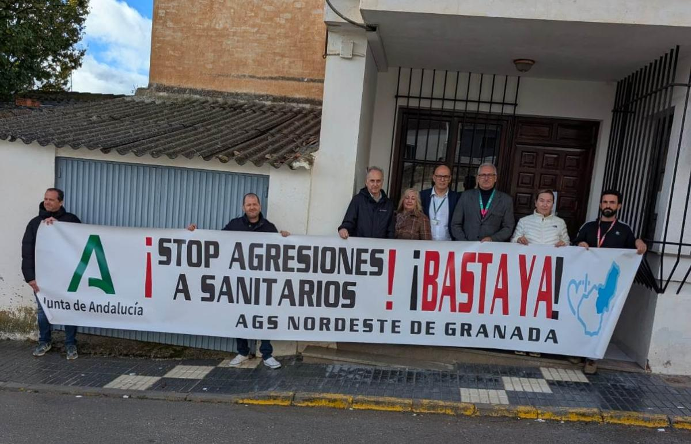
CCOO no tolerará ni una agresión más y nos ponemos a disposición de la persona agredida.
20.000 personas en las calles claman por una vivienda, salarios y servicios públicos dignos
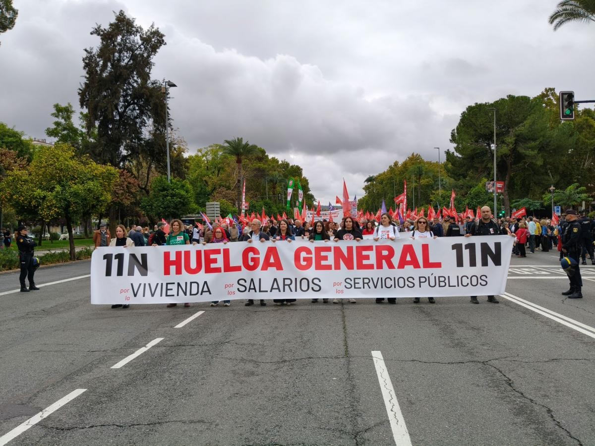
CCOO ha participado como convocante en la manifestación que tuvo que ser aplazada por la alerta meteorológica del 11N. Seguiremos en la lucha hasta conseguir un techo y salarios dignos
¡Por un convenio digno y justo en HLA Clínica Los Naranjos!
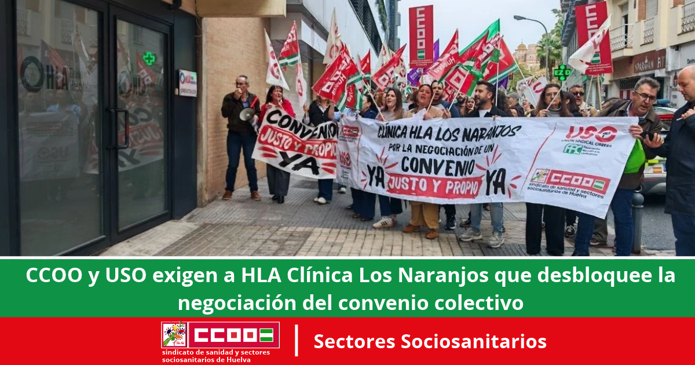
Casi tres años de bloqueo por parte de la empresa. Todo tiene un límite y CCOO no va a permitir este maltrato a las personas trabajadores de HLA.
Alertamos de la precaria situación del personal del Servicio de Cocina y Dietética del Hospital Puerta del Mar
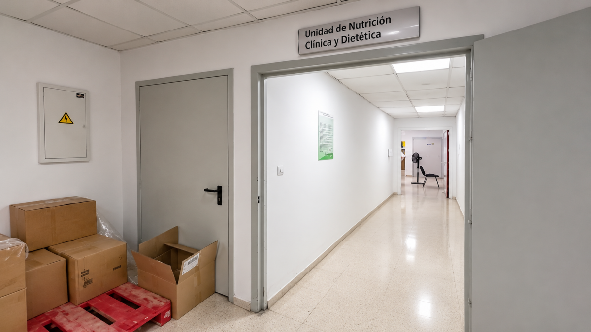
CCOO insta a la Dirección Gerencia del centro sanitario y al SAS a abandonar la gestión basada en la resignación y proceder de inmediato a la cobertura de las plazas.
La mirada satírica
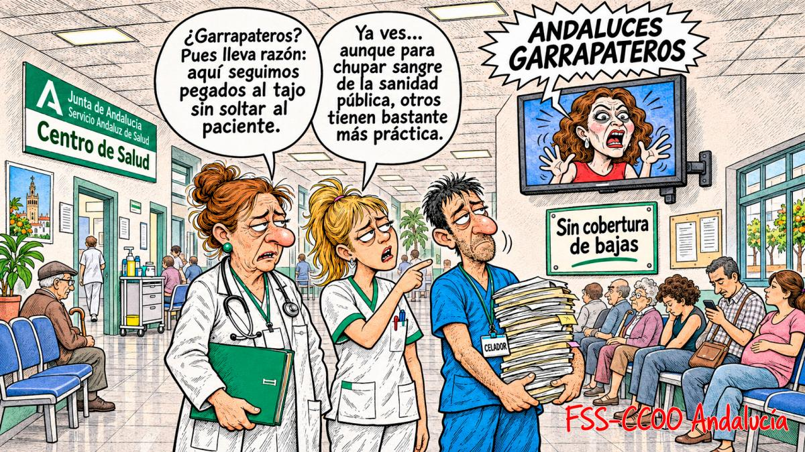
Porque reírse un poco también es salud. ¡Saca una sonrisa compartiendo!